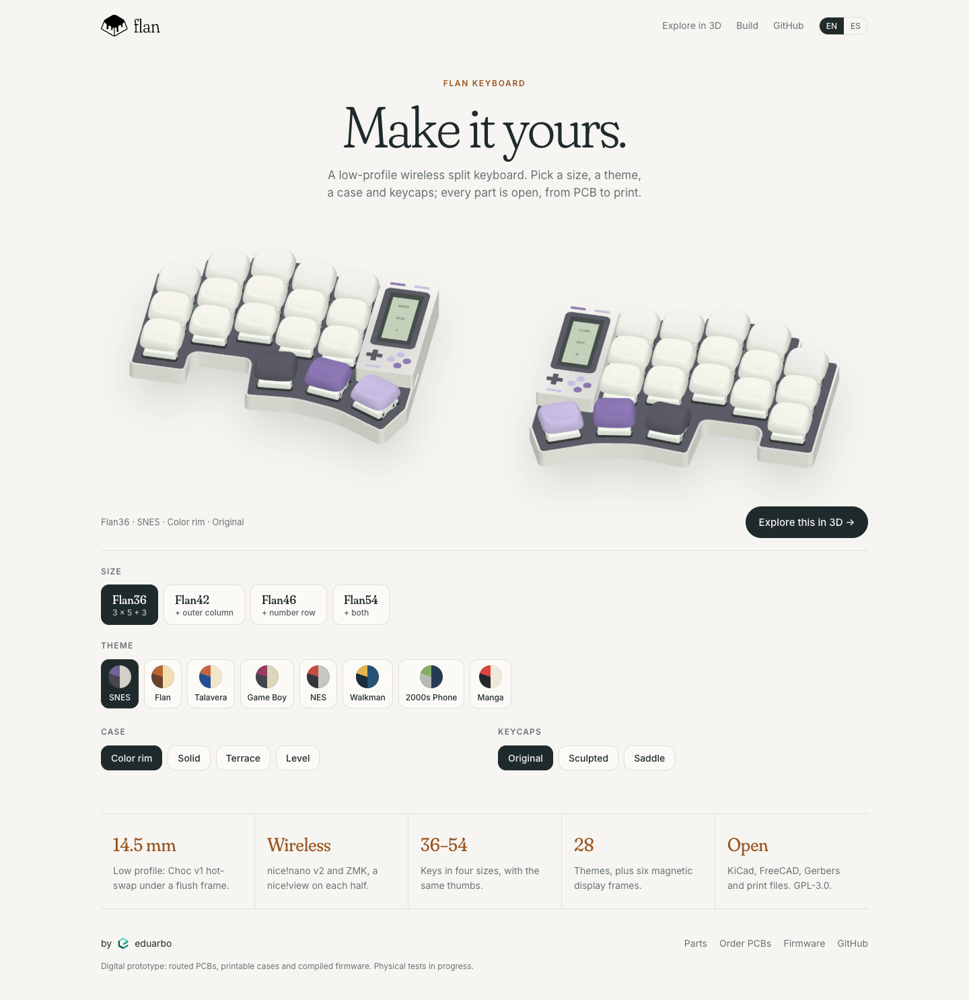
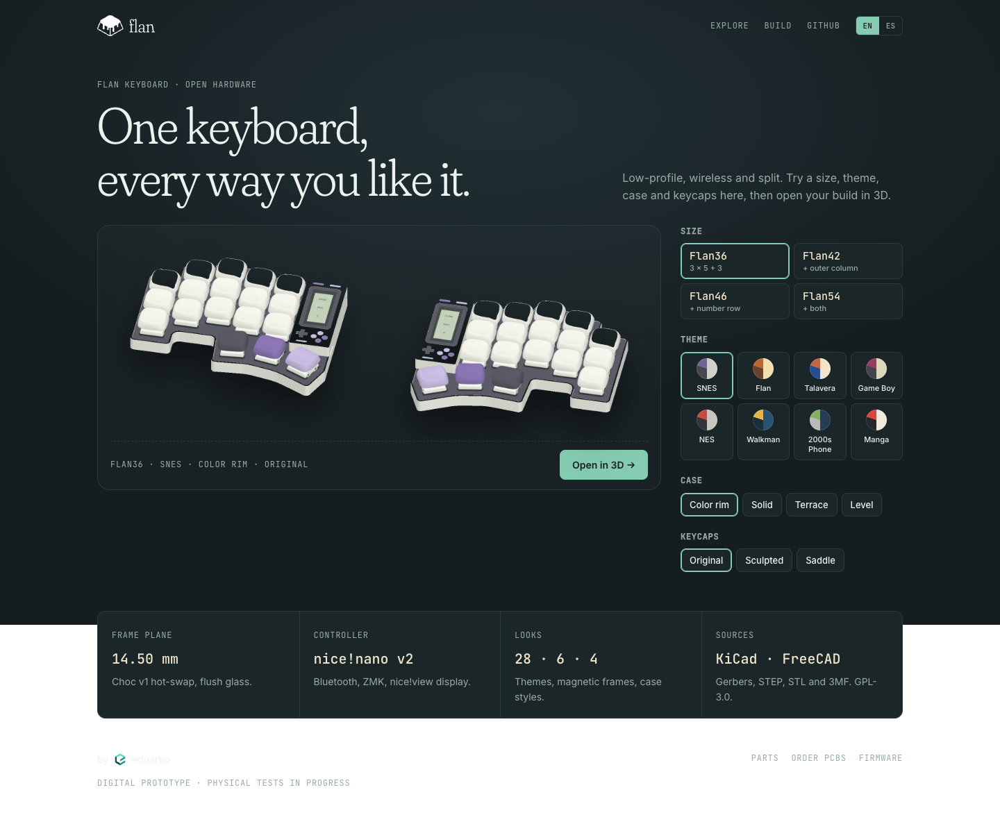

Home page · R2
El configurador es el protagonista. Por defecto: Flan36, tema SNES, caja Color rim y keycaps Original. Cambia tamaño, tema, caja y keycaps al instante, con renders reales del visor; «Explore in 3D» abre el visor completo. «Flan Keyboard» como nombre, en inglés con botón ES.




Cómo funciona
- 384 vistas reales del visor: 4 tamaños × 8 temas con marco propio × 3 formas de keycap × 4 cajas, con la misma cámara por tamaño, así que el teclado no salta al cambiar. Cada vista pesa unos 50 KB y se precargan solo las vecinas de la selección actual.
- 8 de los 28 temas en el home: SNES, Flan, Talavera, Game Boy, NES, Walkman, 2000s Phone y Manga. Los demás quedan en el visor.
- Al implementar: «Explore in 3D» abrirá el visor con exactamente esa combinación. El home irá en la raíz del sitio (flankbd.com cuando conectes el dominio) y el visor mostrará el logo con enlace de regreso.